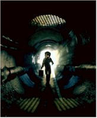
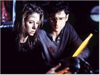

The setting: New York City, four years earlier. A plague has targeted the city’s children, and they are dying in record numbers, antibiotics being powerless to stop its relentless encroachment. The similarities between this plague and another, one much blacker in name, that eliminated one-third of the world’s population some five hundred years ago is chillingly apparent. This time, however, the answer to this plague comes not from God’s judgement or poisoned well water, but from the emerging field of bio-engineering. Dr. Susan Tyler (Sorvino) is one of its most promising acolytes. She combines forces with the head of the Center for Disease Control, Dr. Peter Mann (Northam), who just happens to be her husband, to fight the plague. Tyler’s plan is to recombine the DNA from various species to create a counteragent to the disease. She calls her new creation – a cross between a mantis and a cockroach – the "Judas Breed." Miraculously, the cure takes hold and the disease is not allowed to run its deadly course. Since the breed has a life span of six months, there would appear to be no long-lasting side effects to this necessary invention. The warnings from her former professor (Abraham) about the dangers of playing God seem to have been only the ravings of a scientific paranoiac.

Forward to the present, where Dr. Tyler is about to discover just how successful her creation has been. Mysterious and grisly deaths begin to manifest themselves around the city. Tyler and Mann soon discover that the Judas breed has learned how to "mimic" its predator, in conjunction with the natural laws of evolution. The creatures have not only outwitted their built-in self-destruct sequence, but they have also adopted human characteristics, threatening the city. One little boy, Chuy (Goodwin), is the first to take note of this sinister development, though his observations are not of the scientific sort; all he notices are the "neat shoes" on one of the victims. Oblivious to the danger the creatures represent, Chuy is soon communicating with them so often that his father (Giannini), a shoe-shine man who works out of the Delancy St. subway station, thinks his son is suffering from delusions. But soon Drs. Tyler and Mann also converge on the same station, having traced the source of the creatures to the tunnels below. In the process, they enlist the assistance of a skeptical subway officer (Dutton) and a detective (Brolin) who has been investigating these deaths. The search takes Tyler and Mann, and their four unwitting and unwilling accomplices, into the depths of the system. They will discover history and terror – and their own limits.The narrative of Mimic pulses with fear – not a surprising phenomenon, once you learn that, in addition to Robbins and del Toro, director and noted script-doctor John Sayles, no slouch in constructing compelling stories himself, had a hand in Mimic’s creation. Remove all of the assistance, however, and this is still director del Toro’s nearly-exclusive domain. His 1993 debut, the intriguing-but-flawed Cronos, contained several motifs that would influence the development of Mimic; they are both basic genre films with themes that coalesce around the danger of scientists as sacerdotal figures, who act without acknowledging the potential consequences of their actions. Cronos is the tale of an alchemist who creates a device – would anyone be surprised to learn that it is called the "Cronos" device? – that keeps him alive for nearly four hundred years; at the heart of the machine is an insect whose fluids provide life at the cost of developing a taste for human blood, and the fight over who will possess the device following the inventor’s demise is, predictably, bloody and tragic. It is also very slowly paced, and, at times, seems more interested in the psychological motivations of transformation than in narrative progress. Four years later, del Toro’s talent for genre has finally broken through, since he has succeeded in combining all of the necessary elements. Gone are the straightforward approaches to framing and lighting that also undermined Cronos; instead, del Toro accelerates the film’s nail-biting quotient by a liberal use of off-center framing, achingly slow pans and the sudden inclusion of editing that moves at something approaching light speed. It’s almost as if del Toro has staked a claim to the structure, one that is more than legitimate.
The only legitimate complaint one can raise about the film comes from the deeply flawed premise that sits at its heart. Unfortunately, the rules of biological evolution do not favor the belief that prey often takes on the characteristics of its predators; it is the reverse that occurs. Predators want to get as close to their prey as possible; it would, therefore, behoove them to blend in with the surroundings of their future food supply. For all of that, the film is still enough of a crackling suspense piece to allow me to forgive it this glaring lapse in logic.

Although the concept of "sacerdotal science", and the dire warnings against it, are hardly new, courtesy of Shelley and her Dr. Frankenstein, not to mention the more vile machinations by Hitler’s own eugenicists (the phrase "sacerdotal science" was in fact coined by German scientist Benno Muller-Hill to describe the motivations behind the pseudo-scientific depredations of Mengele et al.), there is an important reminder in Mimic about the sometimes disastrous consequences that ensue when good intentions, time pressures and closed systems are interwoven; quantum mechanics may have superceded many of Newton’s laws, but perhaps his third law – concerning actions that result in equal and opposite reactions – isn’t quite as anachronistic as previously thought, at least in regard to biology.The director is also blessed with actors who are taking their work seriously, and the overall effect shows. This is most evident in the case of Sorvino, whose past roles in Mighty Aphrodite and the dreadful Romy and Michelle’s …might lead to the impression that the actress is in desperate need of some wind to blow in her ears so that some substance can fill the vacuum resting within. She is affecting and effective as the well-meaning Dr. Tyler. All of the other performances are equally strong. Mimic may not be the shriekfest promised by the advertising, but it will keep you on the edge of your seat and keep you thinking.